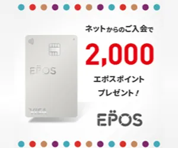

クレジットカードを選ぶとき、「ポイント還元率が一番高いカード」を探していませんか。実は還元率の数字だけを比較しても、年会費やポイントの使い道が自分に合っていなければ、実質的にお得とは言えません。このページでは、クレジットカードをポイント・年会費・利用目的から選ぶための考え方と、詳しい比較記事への案内をまとめています。
楽天カード
楽天市場・楽天ペイと相性の良い年会費無料のカード
楽天ポイントが貯まる
Nexus Card
デポジット額に応じて利用枠が決まるショッピング専用カード
公共料金・通信料の支払いでポイントが貯まる
エポスカード

年会費無料、全国のマルイで優待が受けられるVisaカード
ショッピング利用でポイントが貯まる
コスモ・ザ・カード・オーパス
コスモ石油のガソリン・軽油が会員価格になる年会費永年無料カード
WAON POINTが貯まる
小田急ポイントカード
小田急沿線の生活とOPポイントが貯まるカード
年会費実質無料+クレジット利用200円で1ポイント
クレジットカード選びの結論
結論:還元率だけではなく、年会費・ポイントの使い道・年間利用額・よく使うサービスで選ぶことが重要です。すでに貯めている共通ポイントやマイルがある場合は、それと相性のよいカードから比較するのがおすすめです。
| 普段よく使う・貯めたいポイント | 比較の進め方 |
|---|---|
| 楽天ポイント中心 | 楽天系カードを比較する |
| dポイント中心 | d系カードを比較する |
| Vポイント中心 | Vポイント系カードを比較する |
| Ponta中心 | Pontaと相性のよいカードを比較する |
| ANA/JALマイル中心 | マイルへの移行条件を比較する |
| 特定のポイントにこだわらない | 基本還元率・年会費・使いやすさで判断する |
具体的なカード名・条件は、2026年8月25日時点の公式情報をもとに、次の3つの比較記事で詳しく解説しています。
クレジットカード選びで見る項目
クレジットカードを比較するときは、以下のような項目を組み合わせて見ていくと、実質的なお得さを判断しやすくなります。詳しい内容・具体的なカードの数値は、各比較記事で確認してください。
| 比較軸 | 確認すること |
|---|---|
| 年会費 | 無料・条件付き無料・有料のいずれか |
| 基本還元率 | 通常利用時の還元(キャンペーンや特約店の還元とは分けて確認) |
| ポイント名称 | 何が貯まるカードか |
| ポイント付与単位 | 100円ごと・200円ごとなど、集計の単位 |
| ポイント有効期限 | 固定期間か、実質無期限かなど |
| 交換先 | 共通ポイント・マイルなど、何に交換できるか |
| 年間利用特典 | 年間の利用額など、条件達成型の特典があるか |
| 特約店 | 特定店舗での還元アップがあるか |
| 海外利用 | 海外旅行・海外決済との相性、手数料 |
| 付帯サービス | 保険・空港ラウンジなどが付いているか |
| 利用目的 | 日常使い・旅行・マイル・ネット通販など、何を重視するか |
目的別の詳しい比較記事
カードごとの具体的な年会費・還元率・ポイント制度は、次の3つの記事で目的別に詳しく比較しています。
クレジットカードを選ぶときの注意点
- 「最大〇%還元」といったキャンペーンや特約店の還元率を、通常の基本還元率と混同しない
- 1ポイントの価値は「1円」とは限らず、交換先によって異なる場合がある
- 年会費は「永年無料」「初年度無料」「年間利用額条件で無料」などタイプが分かれるため、条件をよく確認する
- 審査基準や発行スピードは公表されていない場合が多く、断定的な情報はうのみにしない
- すでに同じ用途のカードを持っている場合や、年会費を回収できる利用額に届かない場合は、無理に新しいカードを作らなくてもよい
クレジットカードとポイ活の基本的な考え方はクレジットカードでポイ活する基本!還元率だけで選ばない考え方、還元率の見方はクレジットカードのポイント還元率とは?、選び方のポイントはポイ活向けクレジットカードの選び方でも解説しています。カードを持ちすぎることが気になる方はクレジットカードを作りすぎると危険?もあわせてご覧ください。
クレジットカード関連の記事
上記3記事が具体的なカード比較の中核コンテンツです。以下は、カード選びの前提知識や、個別カードの使い方を解説する記事です。
クレジットカードの基礎知識
クレジットカードでポイ活する基本!還元率だけで選ばない考え方
還元率以外にも見るべき比較軸を初心者向けに解説します。
ポイ活向けクレジットカードの選び方!初心者が見るべき5つのポイント
カード選びで確認したい5つのポイントを解説します。
クレジットカードのポイント還元率とは?1%と0.5%の違いをわかりやすく解説
還元率の基本的な考え方を初心者向けに解説します。
年会費無料カードでポイ活はできる?無理なく始めるカード活用術
年会費無料カードでのポイ活の始め方を解説します。
クレジットカードを作りすぎると危険?ポイ活で注意したい信用情報の基本
カードの持ちすぎで注意したい信用情報の基本を解説します。
空港ラウンジ特典はポイ活に役立つ?カード特典の見極め方
対象カードの確認、同伴者料金の注意、年会費との比較を解説します。
複数クレジットカードの整理術!ポイ活効率を落とさない見直し方
メインカード・サブカードの役割分担と年会費の見直し方を解説します。
カード別の記事
楽天カードはポイ活に向いている?メリットと注意点を初心者向けに解説
楽天カードの基本還元や楽天市場・楽天ペイとの相性を解説します。
dカードはポイ活におすすめ?dポイントを貯めやすい人の特徴
dカードの基本還元やd払いとの相性を解説します。
三井住友カードでVポイントを貯める方法!対象店舗とタッチ決済の基本
対象店舗の確認方法やタッチ決済の注意点を解説します。
JCBのJ-POINT(旧Oki Dokiポイント)活用術!交換先と還元率の考え方
JCBのJ-POINT(旧Oki Dokiポイント)の貯まり方、交換先ごとの違い、キャンペーンの見方を解説します。
このほかのクレジットカード関連記事は記事一覧からもご覧いただけます。
よくある質問
クレジットカードは年会費無料のカードを選べば十分ですか?
年会費無料のカードは始めやすい選択肢ですが、還元率やポイントの使い道によっては、年会費がかかるカードの方が実質的にお得になる場合もあります。年間の利用額とあわせて判断することをおすすめします。
ポイント還元率が一番高いカードを選べば間違いないですか?
還元率だけで選ぶと、貯まったポイントの使い道や交換先が自分に合わない場合があります。普段よく使うサービスや貯めたい共通ポイントにあわせて選ぶことも大切です。
クレジットカードを何枚も持つのはよくないですか?
管理が煩雑になったり、年会費の合計が増えたりする可能性があります。用途を整理してから枚数を検討することをおすすめします。詳しくはクレジットカードを作りすぎると危険?で解説しています。
結局どのクレジットカードが一番おすすめですか?
利用目的やよく使うサービスによって向いているカードは異なるため、当サイトでは一律のおすすめランキングでは案内していません。目的別の比較記事で、ご自身の利用スタイルに近い内容をご確認ください。
情報確認について
クレジットカードの年会費・ポイント還元率・特典条件は、カード会社やポイント運営会社などの公式情報を優先して確認しています。制度やキャンペーンは変更される場合があるため、申込前には必ず各カード会社の公式サイトで最新条件をご確認ください。当サイトの情報の確認方針や運営方針はサイトについてのページでも紹介しています。
まとめ
クレジットカード選びは、ポイント還元率の数字だけで決めるのではなく、年会費・ポイントの使い道・年間利用額・よく使うサービスまで含めて、自分に合った1枚を見つけることが大切です。具体的なカードの比較は、クレジットカードのポイントを徹底比較、共通ポイント別クレジットカード比較、マイルが貯まるクレジットカード比較でご確認ください。